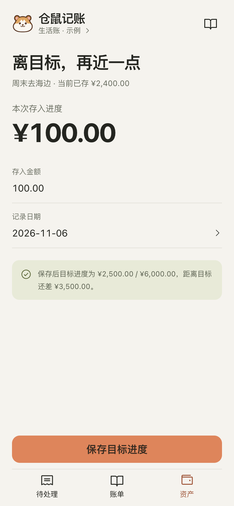
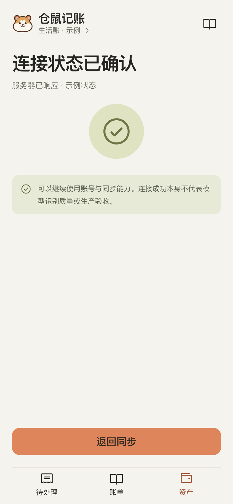
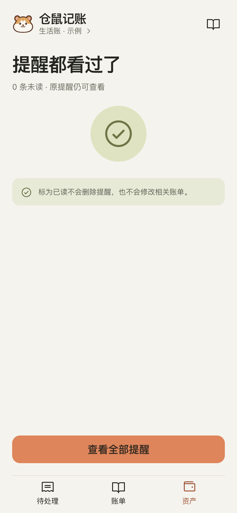
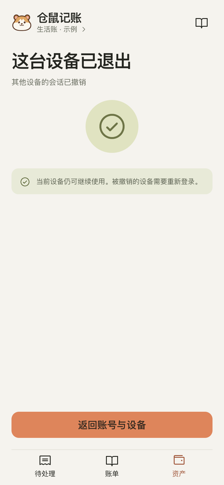
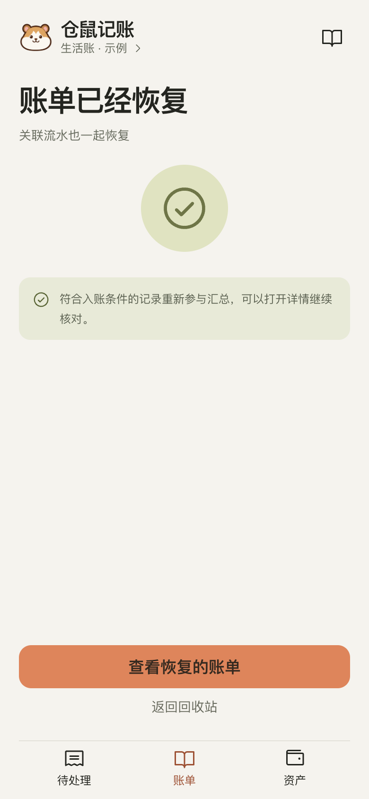
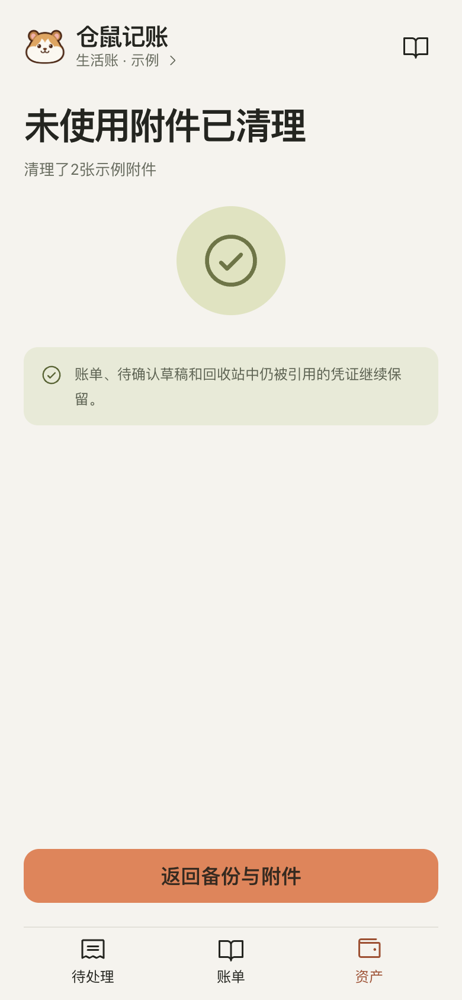

手机视觉稿 / 10
仓鼠记账 / 凭证接力 / 2026-11-06 / 手机 390×844 @2x / 全部虚构样例

离目标，再近一点goal-contribute

连接状态已确认connection-success

提醒都看过了notifications-read

这台设备已退出session-revoked

账单已经恢复restore-record-done

未使用附件已清理cleanup-done